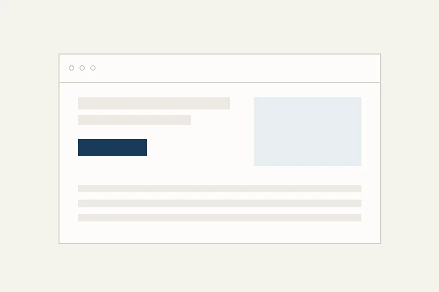
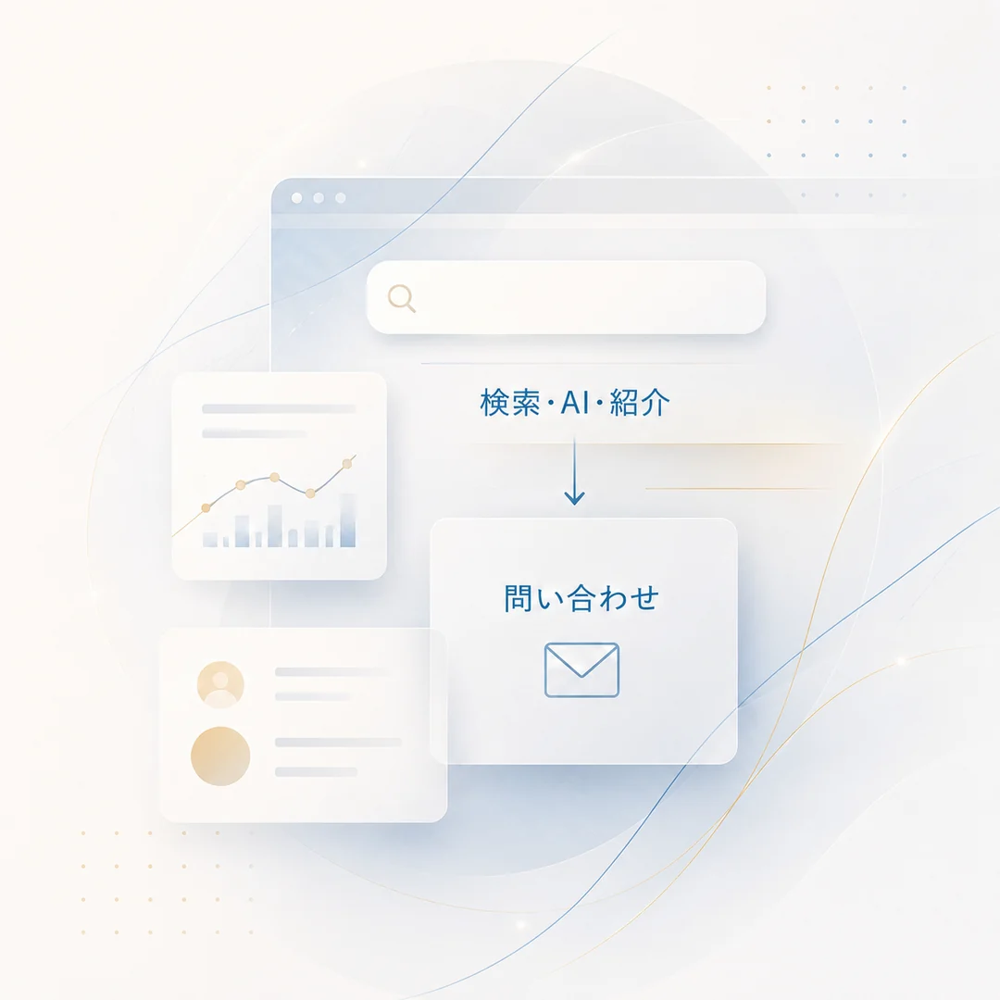
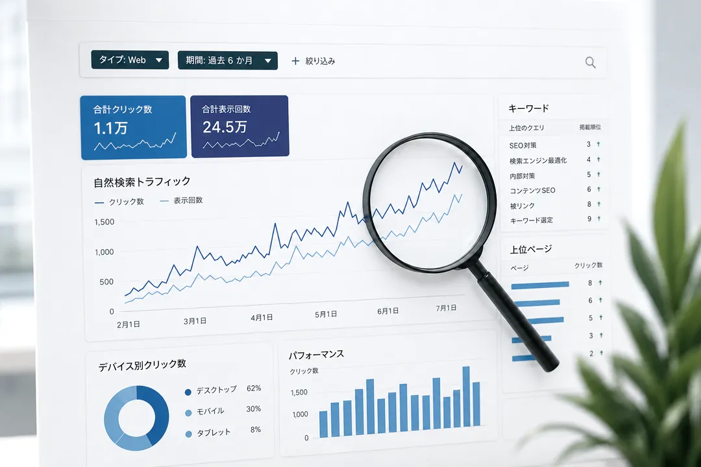

01 — WEB
ホームページ制作
WordPressを中心に、更新しやすく問い合わせにつながる構成で設計します。スマートフォン表示と表示速度は制作時点で作り込みます。
制作前にサイトの課題を相談するSEO歴16年のWebディレクターが、事業の整理からサイト設計・制作、記事、AI検索対策まで一貫して担当します。窓口は変わらず、公開後の改善まで伴走します。

0年
SEO実務歴
0年
Web制作歴
0級
SEO検定
0都道府県
オンラインで全国対応
ISSUE
ホームページは、公開した瞬間がゴールではありません。見つけてもらう設計と、問い合わせまでの導線が抜けていると、どれだけ見た目が良くても数字は動きません。
ひとつでも当てはまるなら、まずは無料診断で現状を確認するところから始められます。
SERVICE
制作・SEO・AI検索対策を別々に考えるのではなく、問い合わせにつながる一つの導線として設計します。すべて同じ担当者が対応するため、途中で目的や意図が抜け落ちません。

WordPressを中心に、更新しやすく問い合わせにつながる構成で設計します。スマートフォン表示と表示速度は制作時点で作り込みます。
制作前にサイトの課題を相談する
ChatGPTなどのAIが情報源として引用しやすい構造にサイトを整えます。検索エンジンだけを見た対策では届かない層に接点をつくります。
AI検索への対応状況を診断するAI検索では、引用されなければ存在しないのと同じになります。
支援開始2023年8月
3万
18ヶ月後2025年2月
20万
キーワードの選定、記事構成、外部ライターの進行管理、既存記事の改善までを担当しました。記事数を増やすのではなく、検索意図とサイト全体の役割を整理したうえで、優先順位をつけて改善しています。
2023年8月から18ヶ月間、企業オウンドメディア1媒体のSEOディレクションを担当した際の実績です。支援開始時点の月間セッション数は3万でした。記載の数値は同期間・同媒体の全データにもとづくもので、成果を保証するものではありません。
WORKS
クライアントの許諾を得て掲載しています。カードをクリックすると公開中のサイトが開きます。

CORPORATE / WEB
スポーツ経済圏を軸にした事業を、暗色ベースの世界観で表現。コーポレートサイトを新規制作。
athlix2026.com

CARE / WORDPRESS
広島県福山市のグループホーム。ご家族が安心して問い合わせできる導線と、職員が自分で更新できる構成に。
breakthrough-co.jp

TRADING / WORDPRESS
東京・築地の水産物輸入卸。取扱商品と企業信用が伝わる構成で設計。
russia-suisan.com

CONSTRUCTION / WEB
大阪の電気設備・空調工事会社。施工内容と対応エリアを整理し、採用にも使える構成に。
legends1999.net

CONSTRUCTION / WEB
三重県伊勢市の建具工事・キズ補修。職人の技術が伝わる写真主体のレイアウト。
mizukamikougei.com

NPO / WORDPRESS
奈良県天理市の地域子育て支援センター。活動報告を継続発信できる設計と、独自ドメインへの移行まで担当。
salonde-kids.net
企業メディアへの寄稿記事（抜粋）
上記のほか、記憶術・資格・教育系のメディアで累計200記事以上を制作しています。医療、法律、金融、教育など、専門性の高いジャンルの執筆経験があります。
自社サイトにも、
改善できる余地があるか確認しませんか。
REASON
設計・デザイン・実装・SEO・記事まで同じ人間が担当します。「その件は別の担当に確認します」が発生しません。
営業と制作が分かれていないため、最初の打ち合わせで話した内容がそのまま形になります。
「なんとなく良さそう」で決めません。ユーザーの行動、検索ニーズ、競合の状況をもとに、なぜこの構成にするのかを説明します。
更新方法の説明、アクセス解析の見方、記事の書き方まで共有します。自走できる状態を目標にします。
必要な施策を一度にすべて行うのではなく、効果と優先順位を整理して提案します。後回しにできるものは、最初の見積から外します。
まずは、いまのサイトの課題を
相談するところから。
FLOW
全体で4つの工程に分けて進めます。それぞれの工程で何をするのかを、着手前にお伝えします。
事業の強み、ターゲット、競合、現在の集客経路を整理し、サイトに持たせる役割を決めます。
検索ニーズと問い合わせまでの導線をもとに、ページ構成と各ページの内容を設計します。
確定した構成をもとに制作を進め、スマートフォン表示や表示速度まで調整します。
動作確認後に公開し、更新方法とアクセス解析の見方をご説明します。公開後の改善も支援します。
各工程の区切りで内容をご確認いただき、承認を得てから次へ進みます。完成間際に大きな作り直しが発生しません。
文言や画像の差し替え、色・余白・文字サイズの微調整は回数を設けず対応します。デザインやレイアウト、構成そのものの変更、および承認済み工程のやり直しは、別途お見積りとなります。
COMMITMENT
ご契約前に、対応範囲・納期・費用・修正条件を書面で明確にします。制作中は工程ごとに内容をご確認いただき、承認後に次へ進みます。
何に、なぜ費用がかかるのかを説明します。不要だと判断した施策は見積に含めません。
作業範囲、納期、修正の条件を着手前に文書化します。後から範囲が曖昧になることを防ぎます。
公開して終わりにせず、更新方法の共有と、その後の相談先としての窓口を維持します。
PRICE
料金は、ページを作る作業だけでなく、事業の整理、検索ニーズの調査、導線設計、原稿構成、実装、公開後の支援範囲をもとに算出します。不要な施策は勧めず、成果に近いものから優先順位をつけてお見積りします。
10万円〜
税込 / 制作期間の目安 2〜3週間
20万円〜
税込 / 制作期間の目安 4〜6週間
30万円〜
税込 / 制作期間の目安 6〜10週間
最安値でホームページを作ることだけを重視する方には向いていません。事業を理解したうえで、公開後も問い合わせにつながる土台をつくりたい方に向いています。
必要なプランを無料診断で確認する記載の金額は税込です。ページ数の追加、独自機能の開発、ロゴ制作などが必要な場合は別途お見積りとなります。写真撮影の手配やディレクションは承っておりませんが、掲載する画像の選定はサポートします。サーバー代・ドメイン代はお客様のご負担です。着手時に50%、納品時に50%のお支払いをお願いしています。
FAQ
ABOUT
インフォサクセス 代表 / Webディレクター
もともとはメーカーでソフトウェア開発に携わっていました。仕様を決め、検証し、数字で確かめる。その進め方は、当時に身についたものです。2011年に個人でメディアを立ち上げたことをきっかけに、Webの世界へ移りました。
技術の側から入っているので、「なんとなく良さそう」ではなく、数字と構造で説明することを大事にしています。作って終わりにせず、公開後にどう育てるかまで一緒に考える相手を探している方に向いていると思います。
CONTACT
診断だけのご利用でも構いません。営業のご連絡はしていません。
2営業日以内にご返信します。
作り直す必要がない場合は、その旨を率直にお伝えします。内容を確認し、2営業日以内にご連絡します。
サイトをお持ちでない場合は「なし」とご入力ください。
お預かりした情報は診断の目的以外に使用しません。
営業のご連絡や、メールマガジンの配信は行いません。